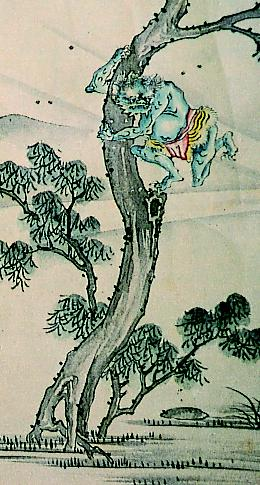

← 图鉴索引

松の木に逃げた鬼。青色で、虎の腰巻をつけている。
出典：親書誌：A5_hermitage_0008：放屁合戦図巻；ホウヒカッセンエマキ／日付：2011／資源識別子：A5_hermitage_0008_0006_0000
Copyright (c)2010- International Research Center for Japanese Studies, Kyoto, Japan. All rights reserved.